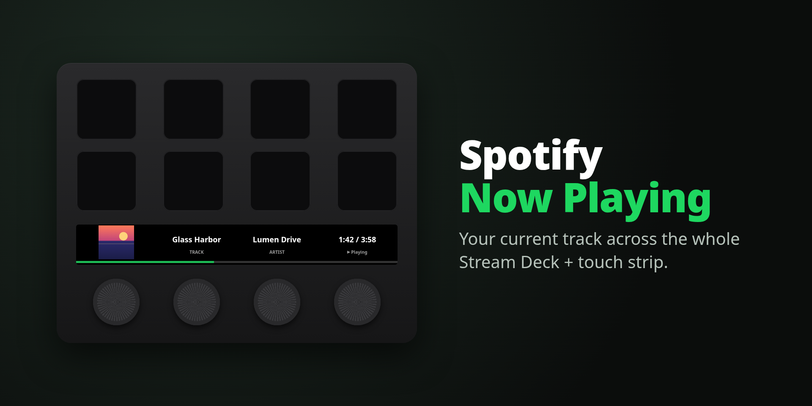
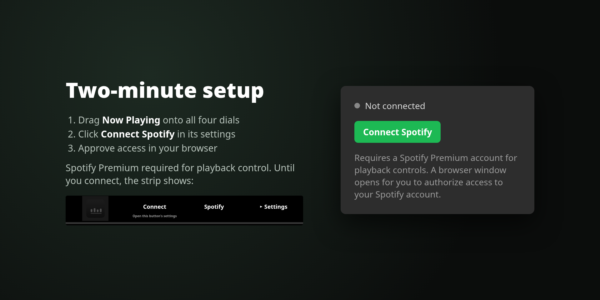
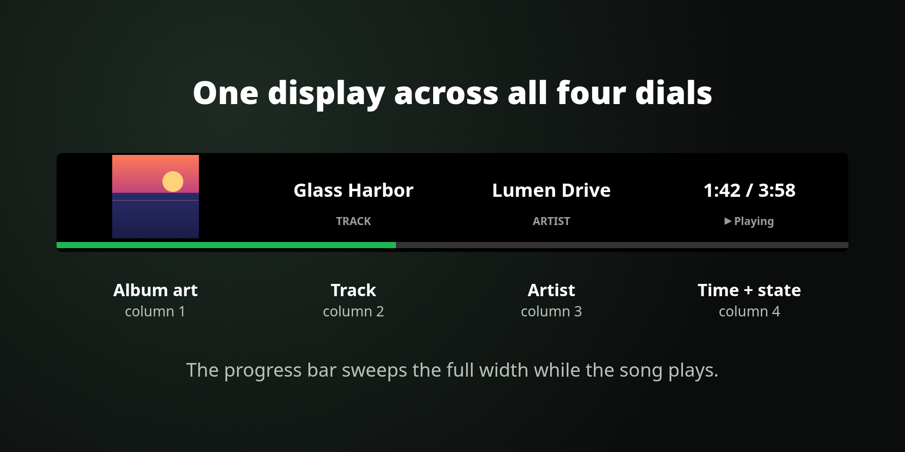
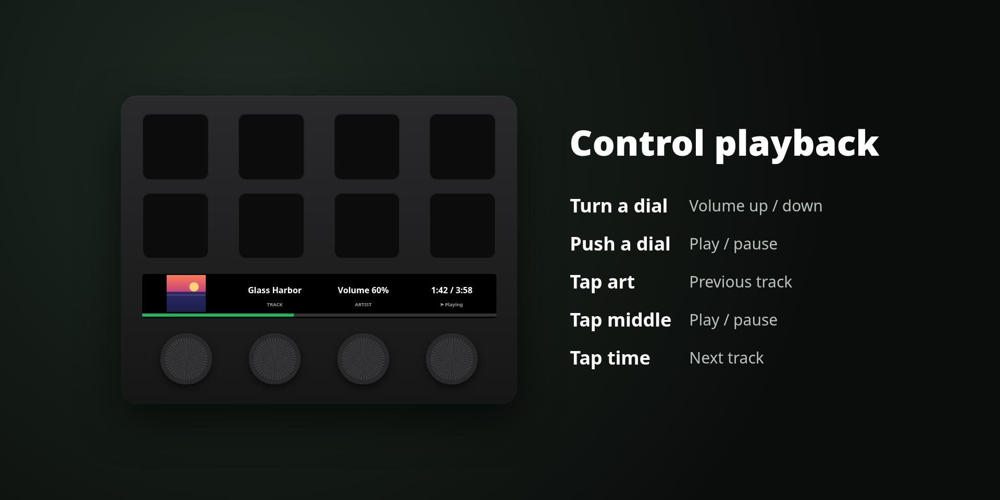

Spotify Now Playing
Turns the whole Stream Deck + touch strip into one display: album art, track, artist and elapsed time, with a progress bar across all four dials. Turn, push or tap to control playback.

Setup
- Install Spotify Now Playing from the Elgato Marketplace.
- Drag the Now Playing action onto all four Stream Deck + dials. Each dial shows its own column; fewer dials also work.
- Open the action's settings and click Connect Spotify.
- Approve access in the browser window that opens. One sign-in covers all four dials.

What it shows

Controls
| Turn any dial | Spotify volume up or down |
| Push any dial | Play / pause |
| Tap the album art | Previous track |
| Tap the track or artist | Play / pause |
| Tap the time | Next track |

Requirements
- Stream Deck + (needs the touch strip and dials)
- Stream Deck 6.9 or later on Windows 10+ or macOS 12+
- Spotify Premium: Spotify only allows playback control for Premium accounts.
Troubleshooting
- Strip says "Nothing playing": start playback in any Spotify app once; the plugin controls the active device.
- Sign-in fails: the plugin listens on 127.0.0.1 ports 8888 to 8890 for Spotify's reply. Close anything using all three ports and click Connect Spotify again.
- Disconnect: open the action's settings and click Disconnect.
Privacy
The plugin only reads what you are playing and sends the playback commands you trigger. Your Spotify sign-in tokens stay in Stream Deck on your computer; nothing is sent anywhere except Spotify.